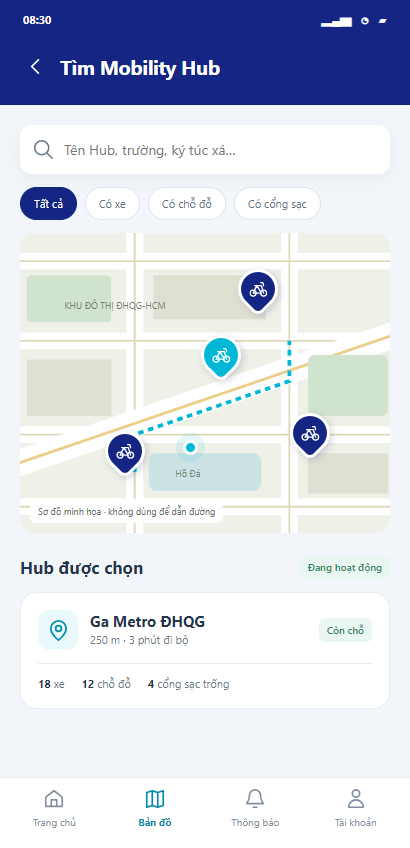
UC01 · Tìm Mobility Hub
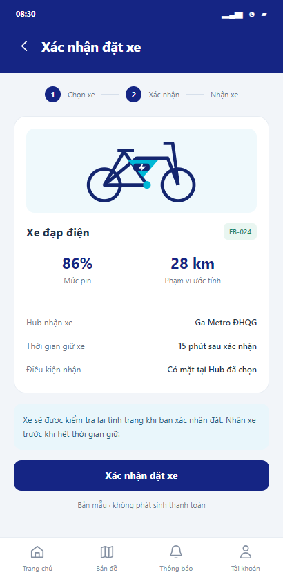
UC03 · Xác nhận đặt xe
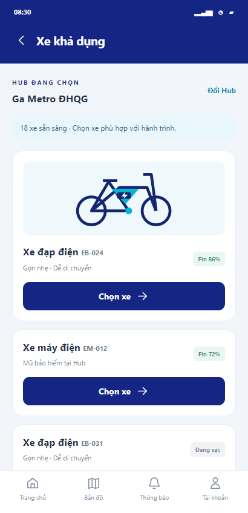
UC02 · Xe khả dụng
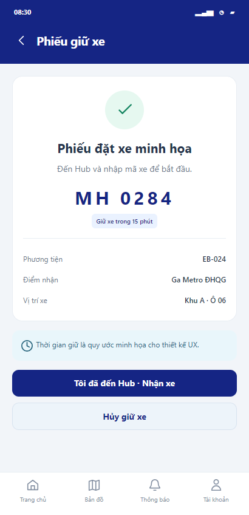
UC03 · Phiếu giữ xe
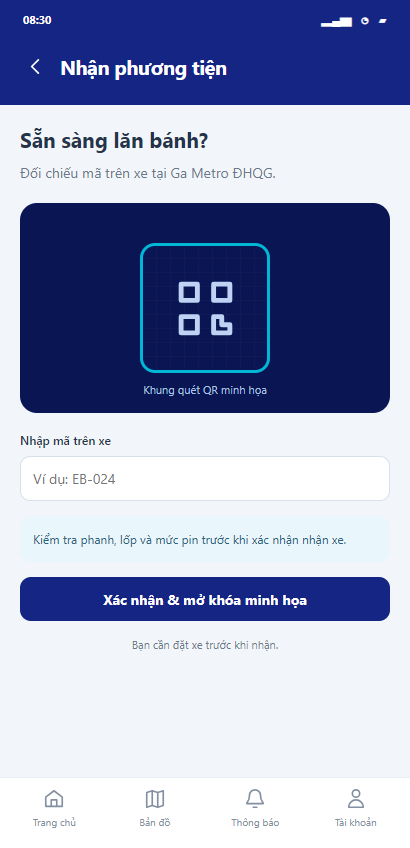
UC04 · Nhận phương tiện
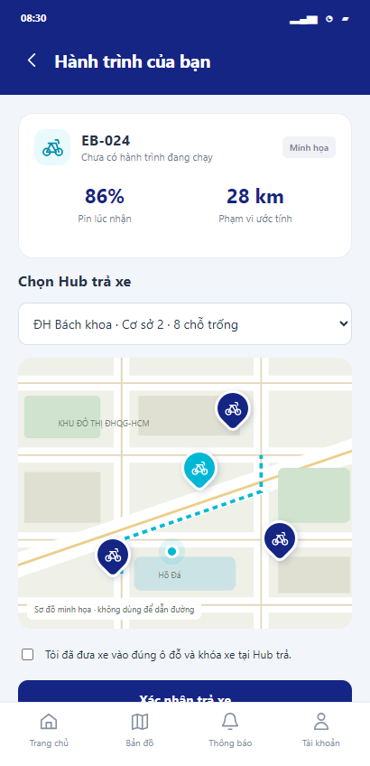
UC05 · Trả phương tiện
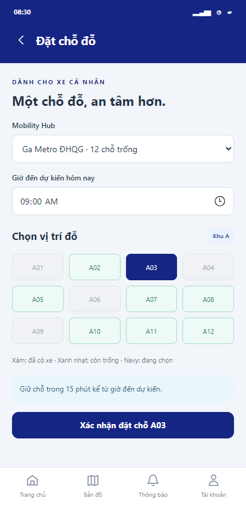
UC06 · Đặt chỗ đỗ
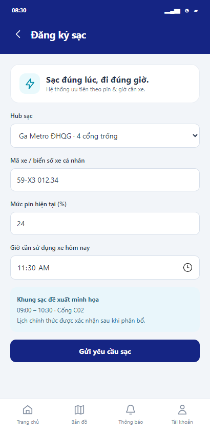
UC07 · Đăng ký sạc
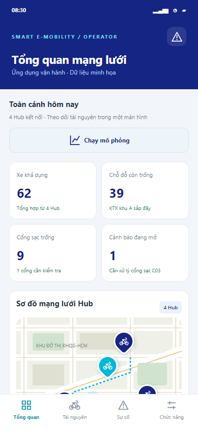
UC08 · Tổng quan mạng lưới
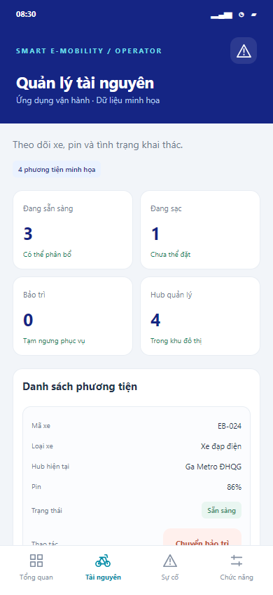
UC09 · Quản lý tài nguyên
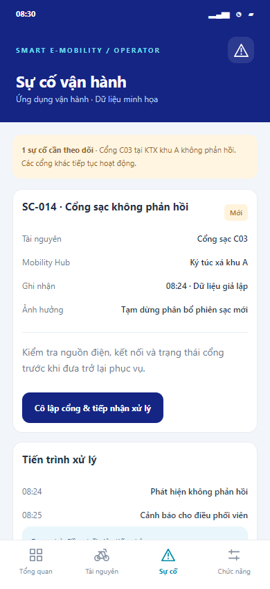
UC11 · Xử lý sự cố
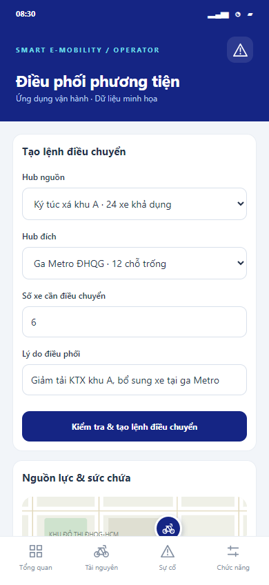
UC10 · Điều phối phương tiện
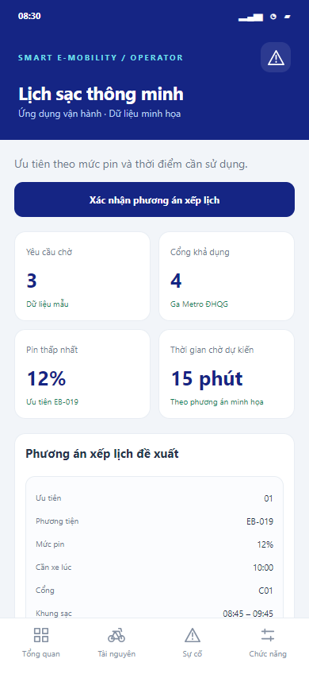
UC12 · Lịch sạc thông minh
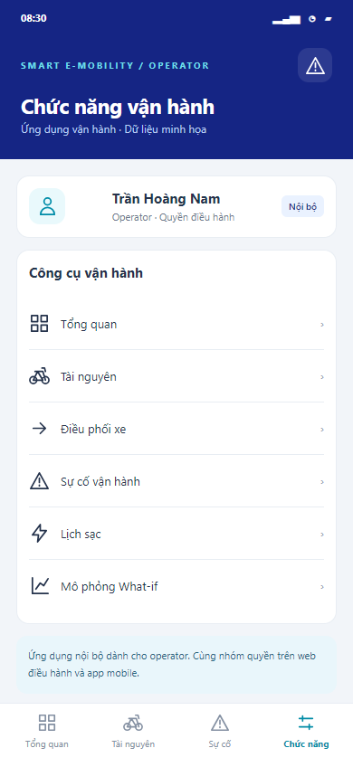
Chức năng operator
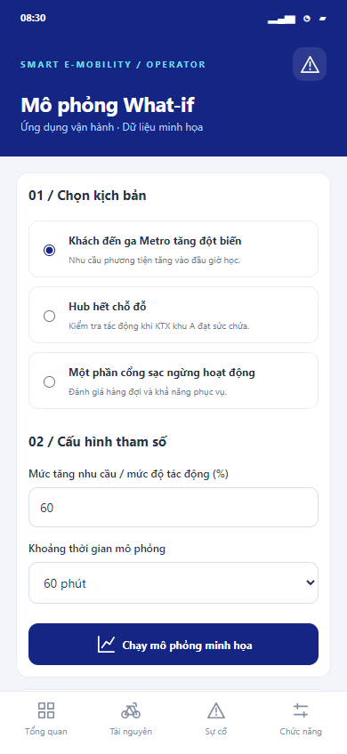
UC13 · Mô phỏng What-if
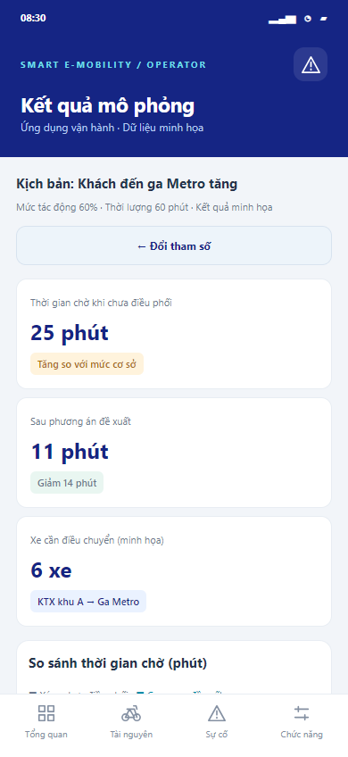
UC14 · Kết quả mô phỏng
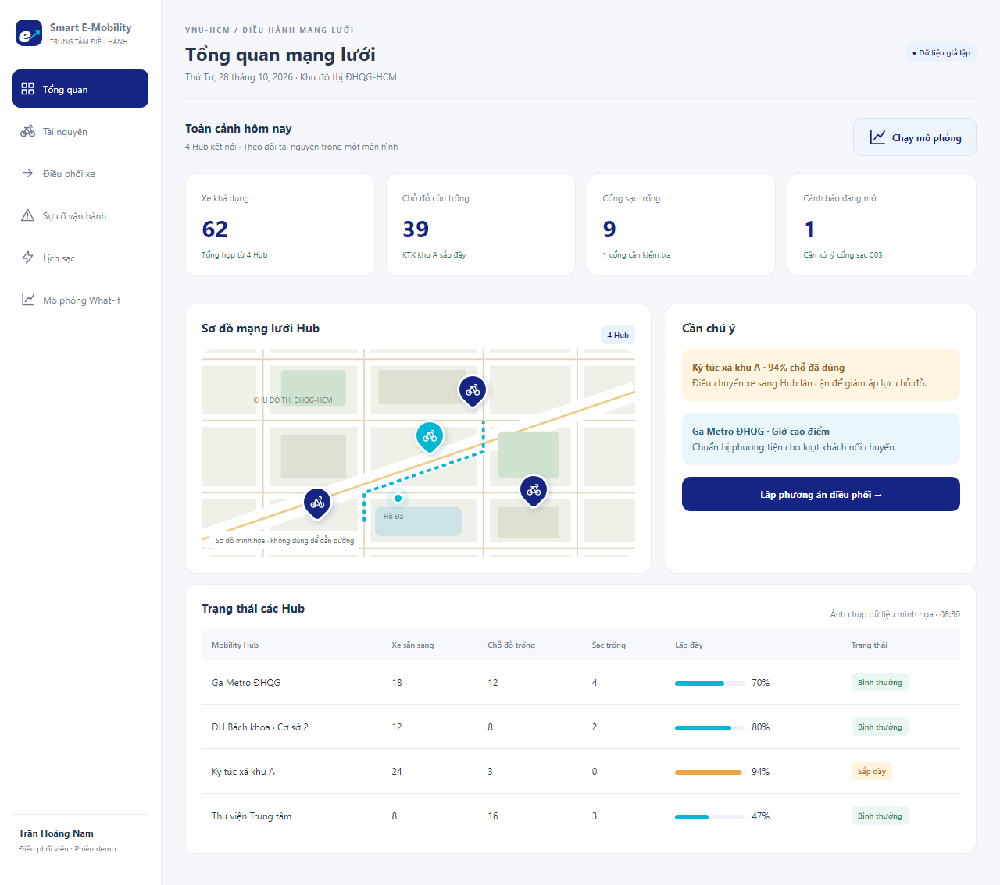
UC08 · Tổng quan mạng lưới
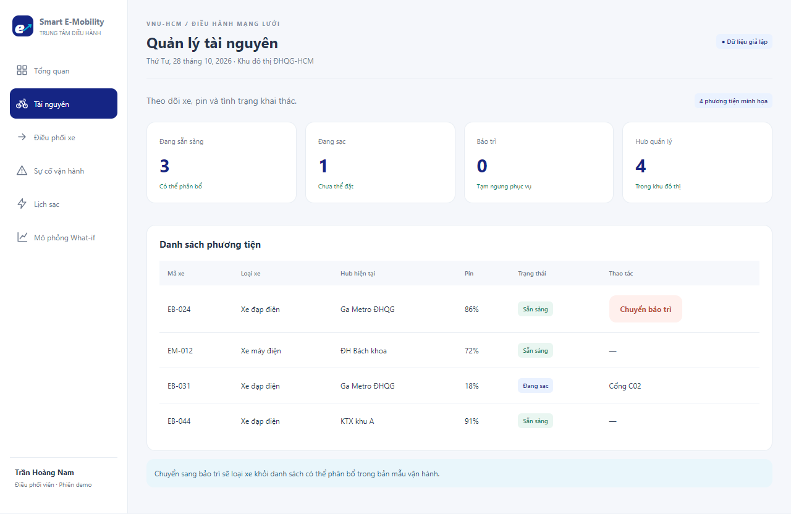
UC09 · Quản lý tài nguyên
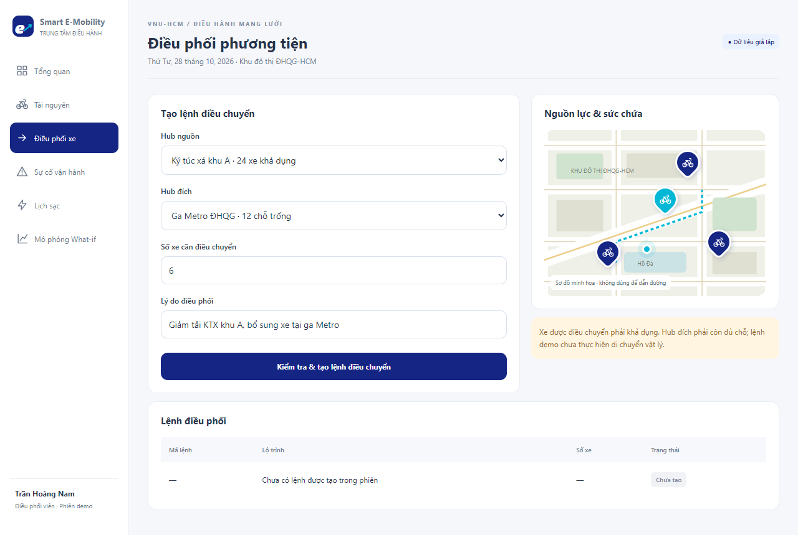
UC10 · Điều phối phương tiện
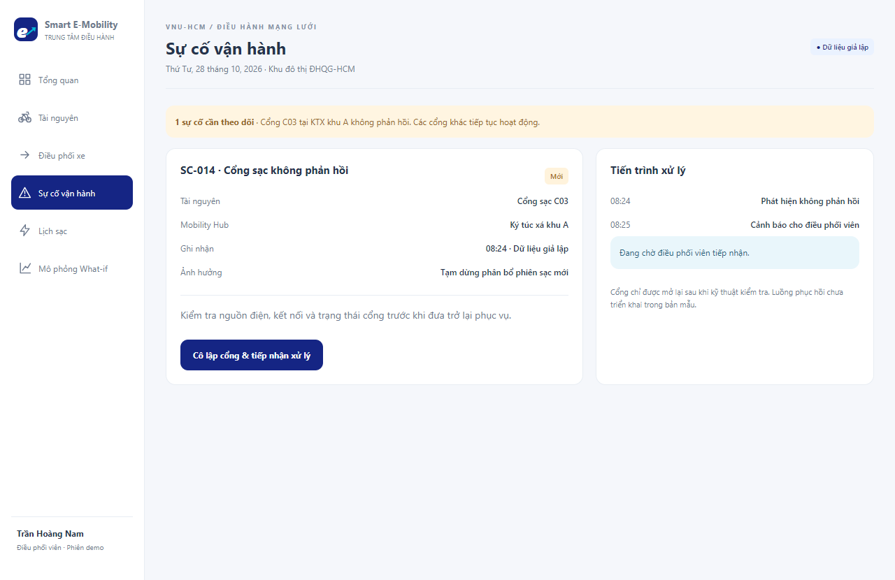
UC11 · Xử lý sự cố
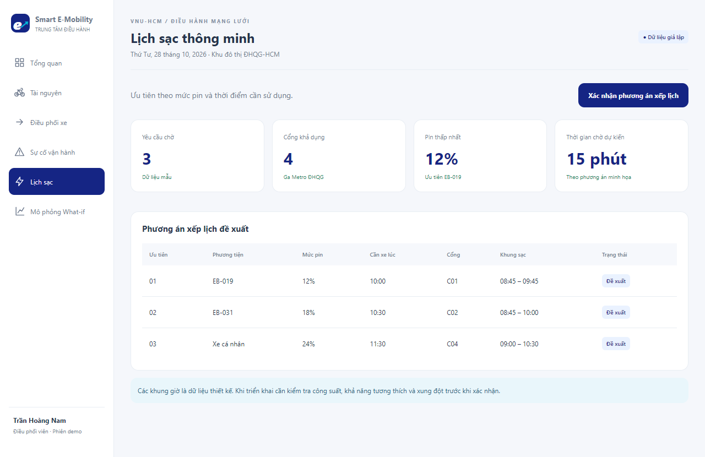
UC12 · Lịch sạc thông minh
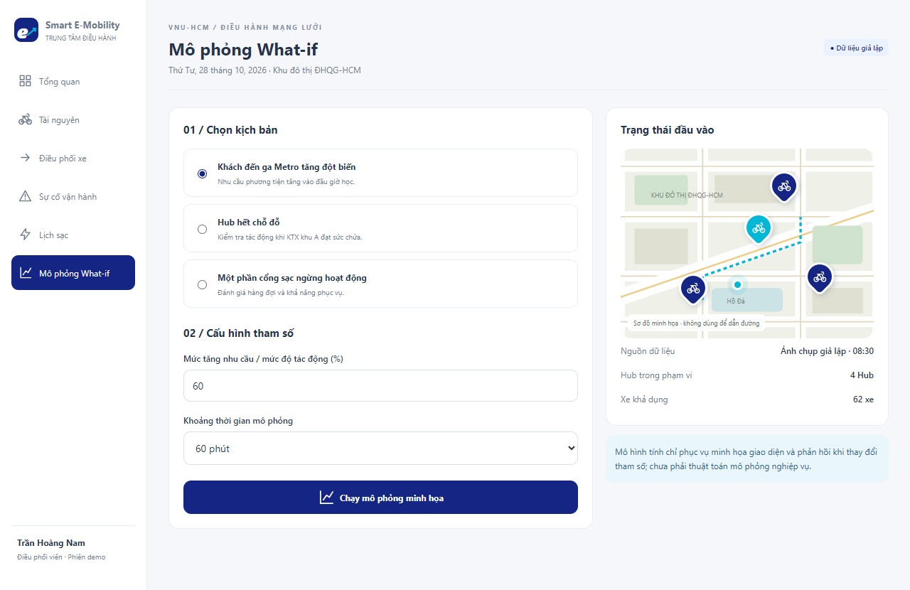
UC13 · Mô phỏng What-if
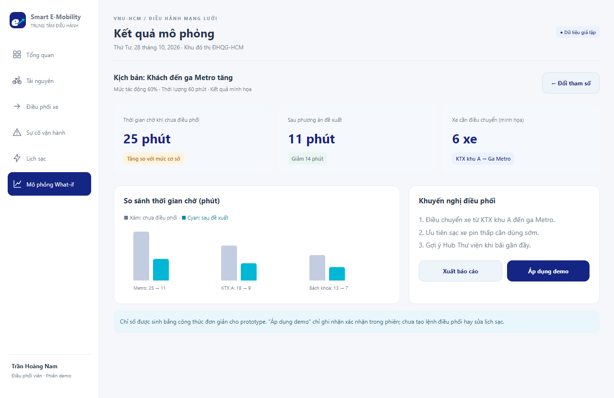
UC14 · Kết quả mô phỏng